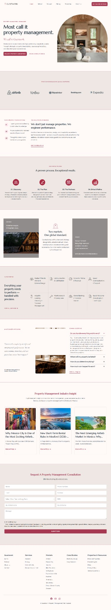
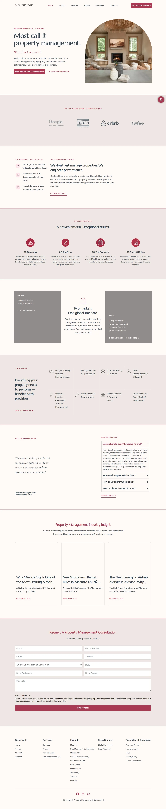

The challenge

← Back to Work
Property management
Guestwork Property Management
Property owners are not only buying management. They are handing someone an asset, their guests and a part of their income.
Platform usedWordPress
Project typeProperty management
The story behind the build
Property owners are not only choosing a service. They are trusting someone with an asset.
Guestwork Property Management needed to speak to owners who are handing over more than a list of tasks. They are trusting someone with their property, their guests and part of their income.
I shaped the WordPress journey around that decision. The service is explained first, the management approach is made clearer, proof and process are separated from general information, and the consultation path stays visible once an owner has enough context.
The finished experience makes it easier for owners to judge fit before they start a conversation.
What I changed
- Write and structure around property-owner concerns.
- Explain the service and approach before the CTA.
- Use hierarchy to separate proof, process and service details.
- Keep the consultation route visible without making the site feel pushy.
Where it ended
Owners can understand whether Guestwork fits their property and move toward a consultation from a position of greater confidence.
THE WEBSITE / Guestwork Property Management
Explore the complete design.
Scroll through each full page and switch between the homepage, inner pages and mobile layout.
Guestwork Property Management / Project Preview
Scroll to explore ↓
